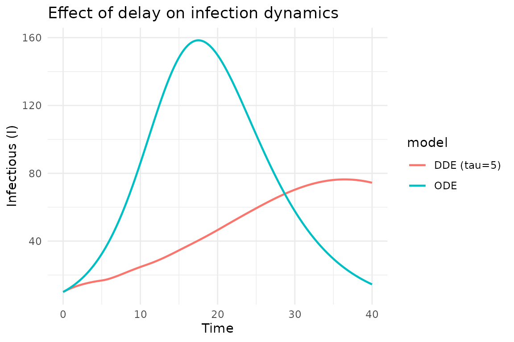
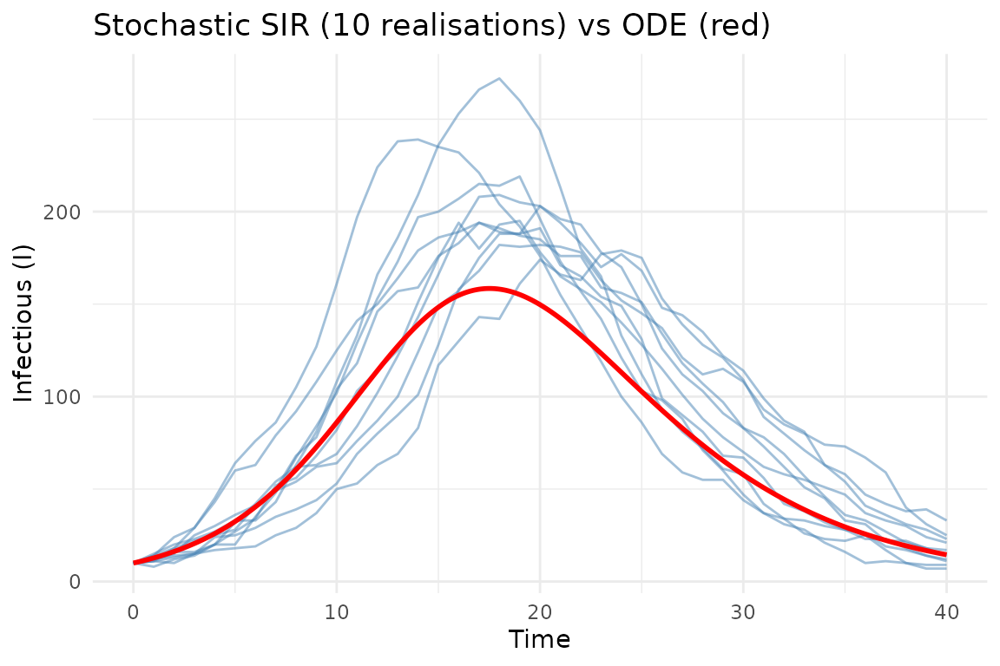
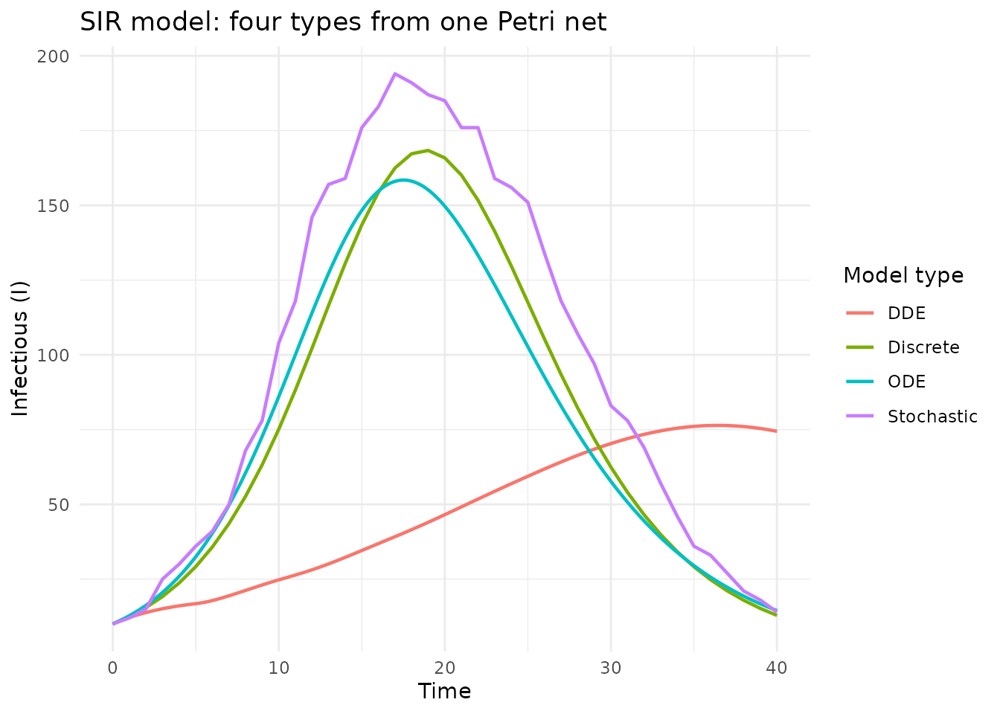

Model types: ODE, DDE, stochastic, and discrete
Simon Frost
2026-03-31
Source:vignettes/model-types.Rmd
model-types.RmdIntroduction
A single Petri net can generate odin2 code for four different model types, following the framework of AlgebraicDynamics.jl. Each type uses the same stoichiometry but differs in how the dynamics are computed.
| Type | odin2 keyword | Time | Randomness |
|---|---|---|---|
| ODE | deriv() |
Continuous | Deterministic |
| DDE |
deriv() + delay()
|
Continuous | Deterministic |
| Stochastic |
update() + Binomial()
|
Discrete | Stochastic |
| Discrete | update() |
Discrete | Deterministic |
library(algebraicodin)
#>
#> Attaching package: 'algebraicodin'
#> The following objects are masked from 'package:base':
#>
#> %o%, %x%We use the standard SIR model throughout:
sir <- labelled_petri_net(
c("S", "I", "R"),
inf = c("S", "I") %=>% c("I", "I"),
rec = "I" %=>% "R"
)
plot_petri(sir)ODE (continuous deterministic)
The default model type. Uses deriv() to define
continuous derivatives solved by numerical integration:
cat(pn_to_odin(sir, "ode"))
#> ## Auto-generated by algebraicodin
#>
#> ## Parameters
#> inf <- parameter()
#> rec <- parameter()
#>
#> ## Initial conditions
#> S0 <- parameter()
#> I0 <- parameter()
#> R0 <- parameter()
#>
#> initial(S) <- S0
#> initial(I) <- I0
#> initial(R) <- R0
#>
#> ## Transition rates
#> rate_inf <- inf * S * I
#> rate_rec <- rec * I
#>
#> ## Derivatives
#> deriv(S) <- -rate_inf
#> deriv(I) <- rate_inf - rate_rec
#> deriv(R) <- rate_rec
gen <- odin2::odin(pn_to_odin(sir, "ode"))
#> ✔ Wrote 'DESCRIPTION'
#> ✔ Wrote 'NAMESPACE'
#> ✔ Wrote 'R/dust.R'
#> ✔ Wrote 'src/dust.cpp'
#> ✔ Wrote 'src/Makevars'
#> ℹ 13 functions decorated with [[cpp11::register]]
#> ✔ generated file cpp11.R
#> ✔ generated file cpp11.cpp
#> ℹ Re-compiling odin.system840d9d16
#> ── R CMD INSTALL ───────────────────────────────────────────────────────────────
#> * installing *source* package ‘odin.system840d9d16’ ...
#> ** this is package ‘odin.system840d9d16’ version ‘0.0.1’
#> ** using staged installation
#> ** libs
#> using C++ compiler: ‘g++ (Ubuntu 13.3.0-6ubuntu2~24.04.1) 13.3.0’
#> g++ -std=gnu++17 -I"/opt/R/4.5.3/lib/R/include" -DNDEBUG -I'/home/runner/work/_temp/Library/cpp11/include' -I'/home/runner/work/_temp/Library/dust2/include' -I'/home/runner/work/_temp/Library/monty/include' -I/usr/local/include -DHAVE_INLINE -fopenmp -fpic -g -O2 -Wall -pedantic -fdiagnostics-color=always -c cpp11.cpp -o cpp11.o
#> g++ -std=gnu++17 -I"/opt/R/4.5.3/lib/R/include" -DNDEBUG -I'/home/runner/work/_temp/Library/cpp11/include' -I'/home/runner/work/_temp/Library/dust2/include' -I'/home/runner/work/_temp/Library/monty/include' -I/usr/local/include -DHAVE_INLINE -fopenmp -fpic -g -O2 -Wall -pedantic -fdiagnostics-color=always -c dust.cpp -o dust.o
#> g++ -std=gnu++17 -shared -L/opt/R/4.5.3/lib/R/lib -L/usr/local/lib -o odin.system840d9d16.so cpp11.o dust.o -fopenmp -L/opt/R/4.5.3/lib/R/lib -lR
#> installing to /tmp/Rtmp0CGV7M/devtools_install_31d44ef87768/00LOCK-dust_31d4325d907d/00new/odin.system840d9d16/libs
#> ** checking absolute paths in shared objects and dynamic libraries
#> * DONE (odin.system840d9d16)
#> ℹ Loading odin.system840d9d16
pars <- list(inf = 0.0005, rec = 0.25, S0 = 990, I0 = 10, R0 = 0)
sys <- dust2::dust_system_create(gen, pars, n_particles = 1)
dust2::dust_system_set_state_initial(sys)
t_ode <- seq(0, 40, by = 0.1)
y_ode <- dust2::dust_system_simulate(sys, t_ode)Hand-written comparison
ode_handwritten <- "
inf <- parameter()
rec <- parameter()
S0 <- parameter()
I0 <- parameter()
R0 <- parameter()
initial(S) <- S0
initial(I) <- I0
initial(R) <- R0
deriv(S) <- -inf * S * I
deriv(I) <- inf * S * I - rec * I
deriv(R) <- rec * I
"
gen_hw <- odin2::odin(ode_handwritten)
#> ✔ Wrote 'DESCRIPTION'
#> ✔ Wrote 'NAMESPACE'
#> ✔ Wrote 'R/dust.R'
#> ✔ Wrote 'src/dust.cpp'
#> ✔ Wrote 'src/Makevars'
#> ℹ 13 functions decorated with [[cpp11::register]]
#> ✔ generated file cpp11.R
#> ✔ generated file cpp11.cpp
#> ℹ Re-compiling odin.system4ba2abf0
#> ── R CMD INSTALL ───────────────────────────────────────────────────────────────
#> * installing *source* package ‘odin.system4ba2abf0’ ...
#> ** this is package ‘odin.system4ba2abf0’ version ‘0.0.1’
#> ** using staged installation
#> ** libs
#> using C++ compiler: ‘g++ (Ubuntu 13.3.0-6ubuntu2~24.04.1) 13.3.0’
#> g++ -std=gnu++17 -I"/opt/R/4.5.3/lib/R/include" -DNDEBUG -I'/home/runner/work/_temp/Library/cpp11/include' -I'/home/runner/work/_temp/Library/dust2/include' -I'/home/runner/work/_temp/Library/monty/include' -I/usr/local/include -DHAVE_INLINE -fopenmp -fpic -g -O2 -Wall -pedantic -fdiagnostics-color=always -c cpp11.cpp -o cpp11.o
#> g++ -std=gnu++17 -I"/opt/R/4.5.3/lib/R/include" -DNDEBUG -I'/home/runner/work/_temp/Library/cpp11/include' -I'/home/runner/work/_temp/Library/dust2/include' -I'/home/runner/work/_temp/Library/monty/include' -I/usr/local/include -DHAVE_INLINE -fopenmp -fpic -g -O2 -Wall -pedantic -fdiagnostics-color=always -c dust.cpp -o dust.o
#> g++ -std=gnu++17 -shared -L/opt/R/4.5.3/lib/R/lib -L/usr/local/lib -o odin.system4ba2abf0.so cpp11.o dust.o -fopenmp -L/opt/R/4.5.3/lib/R/lib -lR
#> installing to /tmp/Rtmp0CGV7M/devtools_install_31d41a14b87a/00LOCK-dust_31d44a23d409/00new/odin.system4ba2abf0/libs
#> ** checking absolute paths in shared objects and dynamic libraries
#> * DONE (odin.system4ba2abf0)
#> ℹ Loading odin.system4ba2abf0
sys_hw <- dust2::dust_system_create(gen_hw, pars, n_particles = 1)
dust2::dust_system_set_state_initial(sys_hw)
y_hw <- dust2::dust_system_simulate(sys_hw, t_ode)
cat("ODE max diff:", max(abs(y_ode - y_hw)), "\n")
#> ODE max diff: 0DDE (delay differential equations)
DDEs introduce delays into the dynamics. In epidemiology, this can model a fixed incubation period or delayed immune response.
The delays argument specifies which transitions use
delayed values and the delay time (tau):
dde_code <- pn_to_odin(sir, "dde", delays = list(
inf = list(tau = 5, species = "I")
))
cat(dde_code)
#> ## Auto-generated by algebraicodin
#>
#> ## Parameters
#> inf <- parameter()
#> rec <- parameter()
#>
#> ## Initial conditions
#> S0 <- parameter()
#> I0 <- parameter()
#> R0 <- parameter()
#>
#> initial(S) <- S0
#> initial(I) <- I0
#> initial(R) <- R0
#>
#> ## Delayed variables
#> I_delayed_inf <- delay(I, 5)
#>
#> ## Transition rates
#> rate_inf <- inf * S * I_delayed_inf
#> rate_rec <- rec * I
#>
#> ## Derivatives
#> deriv(S) <- -rate_inf
#> deriv(I) <- rate_inf - rate_rec
#> deriv(R) <- rate_recThe infection rate now uses delay(I, 5) instead of the
current value of I, meaning that infectiousness depends on the state 5
time units in the past.
Hand-written comparison
dde_handwritten <- "
inf <- parameter()
rec <- parameter()
S0 <- parameter()
I0 <- parameter()
R0 <- parameter()
initial(S) <- S0
initial(I) <- I0
initial(R) <- R0
I_delayed <- delay(I, 5)
deriv(S) <- -inf * S * I_delayed
deriv(I) <- inf * S * I_delayed - rec * I
deriv(R) <- rec * I
"
gen_dde <- odin2::odin(dde_code)
#> ✔ Wrote 'DESCRIPTION'
#> ✔ Wrote 'NAMESPACE'
#> ✔ Wrote 'R/dust.R'
#> ✔ Wrote 'src/dust.cpp'
#> ✔ Wrote 'src/Makevars'
#> ℹ 13 functions decorated with [[cpp11::register]]
#> ✔ generated file cpp11.R
#> ✔ generated file cpp11.cpp
#> ℹ Re-compiling odin.systemdb69a213
#> ── R CMD INSTALL ───────────────────────────────────────────────────────────────
#> * installing *source* package ‘odin.systemdb69a213’ ...
#> ** this is package ‘odin.systemdb69a213’ version ‘0.0.1’
#> ** using staged installation
#> ** libs
#> using C++ compiler: ‘g++ (Ubuntu 13.3.0-6ubuntu2~24.04.1) 13.3.0’
#> g++ -std=gnu++17 -I"/opt/R/4.5.3/lib/R/include" -DNDEBUG -I'/home/runner/work/_temp/Library/cpp11/include' -I'/home/runner/work/_temp/Library/dust2/include' -I'/home/runner/work/_temp/Library/monty/include' -I/usr/local/include -DHAVE_INLINE -fopenmp -fpic -g -O2 -Wall -pedantic -fdiagnostics-color=always -c cpp11.cpp -o cpp11.o
#> g++ -std=gnu++17 -I"/opt/R/4.5.3/lib/R/include" -DNDEBUG -I'/home/runner/work/_temp/Library/cpp11/include' -I'/home/runner/work/_temp/Library/dust2/include' -I'/home/runner/work/_temp/Library/monty/include' -I/usr/local/include -DHAVE_INLINE -fopenmp -fpic -g -O2 -Wall -pedantic -fdiagnostics-color=always -c dust.cpp -o dust.o
#> g++ -std=gnu++17 -shared -L/opt/R/4.5.3/lib/R/lib -L/usr/local/lib -o odin.systemdb69a213.so cpp11.o dust.o -fopenmp -L/opt/R/4.5.3/lib/R/lib -lR
#> installing to /tmp/Rtmp0CGV7M/devtools_install_31d4554df851/00LOCK-dust_31d44159d3ae/00new/odin.systemdb69a213/libs
#> ** checking absolute paths in shared objects and dynamic libraries
#> * DONE (odin.systemdb69a213)
#> ℹ Loading odin.systemdb69a213
pars_dde <- list(inf = 0.0005, rec = 0.25, S0 = 990, I0 = 10, R0 = 0)
sys_dde <- dust2::dust_system_create(gen_dde, pars_dde, n_particles = 1)
dust2::dust_system_set_state_initial(sys_dde)
y_dde <- dust2::dust_system_simulate(sys_dde, t_ode)
gen_hw2 <- odin2::odin(dde_handwritten)
#> ✔ Wrote 'DESCRIPTION'
#> ✔ Wrote 'NAMESPACE'
#> ✔ Wrote 'R/dust.R'
#> ✔ Wrote 'src/dust.cpp'
#> ✔ Wrote 'src/Makevars'
#> ℹ 13 functions decorated with [[cpp11::register]]
#> ✔ generated file cpp11.R
#> ✔ generated file cpp11.cpp
#> ℹ Re-compiling odin.system87a9fd7a
#> ── R CMD INSTALL ───────────────────────────────────────────────────────────────
#> * installing *source* package ‘odin.system87a9fd7a’ ...
#> ** this is package ‘odin.system87a9fd7a’ version ‘0.0.1’
#> ** using staged installation
#> ** libs
#> using C++ compiler: ‘g++ (Ubuntu 13.3.0-6ubuntu2~24.04.1) 13.3.0’
#> g++ -std=gnu++17 -I"/opt/R/4.5.3/lib/R/include" -DNDEBUG -I'/home/runner/work/_temp/Library/cpp11/include' -I'/home/runner/work/_temp/Library/dust2/include' -I'/home/runner/work/_temp/Library/monty/include' -I/usr/local/include -DHAVE_INLINE -fopenmp -fpic -g -O2 -Wall -pedantic -fdiagnostics-color=always -c cpp11.cpp -o cpp11.o
#> g++ -std=gnu++17 -I"/opt/R/4.5.3/lib/R/include" -DNDEBUG -I'/home/runner/work/_temp/Library/cpp11/include' -I'/home/runner/work/_temp/Library/dust2/include' -I'/home/runner/work/_temp/Library/monty/include' -I/usr/local/include -DHAVE_INLINE -fopenmp -fpic -g -O2 -Wall -pedantic -fdiagnostics-color=always -c dust.cpp -o dust.o
#> g++ -std=gnu++17 -shared -L/opt/R/4.5.3/lib/R/lib -L/usr/local/lib -o odin.system87a9fd7a.so cpp11.o dust.o -fopenmp -L/opt/R/4.5.3/lib/R/lib -lR
#> installing to /tmp/Rtmp0CGV7M/devtools_install_31d4538da6a5/00LOCK-dust_31d4527e5be9/00new/odin.system87a9fd7a/libs
#> ** checking absolute paths in shared objects and dynamic libraries
#> * DONE (odin.system87a9fd7a)
#> ℹ Loading odin.system87a9fd7a
sys_hw2 <- dust2::dust_system_create(gen_hw2, pars_dde, n_particles = 1)
dust2::dust_system_set_state_initial(sys_hw2)
y_hw2 <- dust2::dust_system_simulate(sys_hw2, t_ode)
cat("DDE max diff:", max(abs(y_dde - y_hw2)), "\n")
#> DDE max diff: 0
library(ggplot2)
df <- data.frame(
time = rep(t_ode, 2),
I = c(y_ode[2, ], y_dde[2, ]),
model = rep(c("ODE", "DDE (tau=5)"), each = length(t_ode))
)
ggplot(df, aes(time, I, colour = model)) +
geom_line(linewidth = 0.8) +
labs(title = "Effect of delay on infection dynamics",
x = "Time", y = "Infectious (I)") +
theme_minimal()
The delay shifts the epidemic peak later and reduces its height, as the infection rate responds to historical rather than current infectiousness.
Stochastic (discrete-time)
The stochastic model uses Binomial() draws for each
transition, modelling demographic stochasticity:
cat(pn_to_odin(sir, "stochastic"))
#> ## Auto-generated by algebraicodin
#>
#> ## Parameters
#> inf <- parameter()
#> rec <- parameter()
#>
#> ## Initial conditions
#> S0 <- parameter()
#> I0 <- parameter()
#> R0 <- parameter()
#>
#> initial(S) <- S0
#> initial(I) <- I0
#> initial(R) <- R0
#>
#> ## Transition probabilities and draws
#> p_inf <- 1 - exp(-(inf * I) * dt)
#> n_inf <- Binomial(S, p_inf)
#> p_rec <- 1 - exp(-(rec) * dt)
#> n_rec <- Binomial(I, p_rec)
#>
#> ## Update equations
#> update(S) <- S - n_inf
#> update(I) <- I + n_inf - n_rec
#> update(R) <- R + n_recKey features: - Transition probabilities:
- Draws: Binomial(substrate, probability) - Update
equations use draws instead of rates
Hand-written comparison
stoch_handwritten <- "
inf <- parameter()
rec <- parameter()
S0 <- parameter()
I0 <- parameter()
R0 <- parameter()
initial(S) <- S0
initial(I) <- I0
initial(R) <- R0
p_inf <- 1 - exp(-(inf * I) * dt)
n_inf <- Binomial(S, p_inf)
p_rec <- 1 - exp(-(rec) * dt)
n_rec <- Binomial(I, p_rec)
update(S) <- S - n_inf
update(I) <- I + n_inf - n_rec
update(R) <- R + n_rec
"
gen_stoch <- odin2::odin(pn_to_odin(sir, "stochastic"))
#> ✔ Wrote 'DESCRIPTION'
#> ✔ Wrote 'NAMESPACE'
#> ✔ Wrote 'R/dust.R'
#> ✔ Wrote 'src/dust.cpp'
#> ✔ Wrote 'src/Makevars'
#> ℹ 12 functions decorated with [[cpp11::register]]
#> ✔ generated file cpp11.R
#> ✔ generated file cpp11.cpp
#> ℹ Re-compiling odin.system1c0df591
#> ── R CMD INSTALL ───────────────────────────────────────────────────────────────
#> * installing *source* package ‘odin.system1c0df591’ ...
#> ** this is package ‘odin.system1c0df591’ version ‘0.0.1’
#> ** using staged installation
#> ** libs
#> using C++ compiler: ‘g++ (Ubuntu 13.3.0-6ubuntu2~24.04.1) 13.3.0’
#> g++ -std=gnu++17 -I"/opt/R/4.5.3/lib/R/include" -DNDEBUG -I'/home/runner/work/_temp/Library/cpp11/include' -I'/home/runner/work/_temp/Library/dust2/include' -I'/home/runner/work/_temp/Library/monty/include' -I/usr/local/include -DHAVE_INLINE -fopenmp -fpic -g -O2 -Wall -pedantic -fdiagnostics-color=always -c cpp11.cpp -o cpp11.o
#> g++ -std=gnu++17 -I"/opt/R/4.5.3/lib/R/include" -DNDEBUG -I'/home/runner/work/_temp/Library/cpp11/include' -I'/home/runner/work/_temp/Library/dust2/include' -I'/home/runner/work/_temp/Library/monty/include' -I/usr/local/include -DHAVE_INLINE -fopenmp -fpic -g -O2 -Wall -pedantic -fdiagnostics-color=always -c dust.cpp -o dust.o
#> g++ -std=gnu++17 -shared -L/opt/R/4.5.3/lib/R/lib -L/usr/local/lib -o odin.system1c0df591.so cpp11.o dust.o -fopenmp -L/opt/R/4.5.3/lib/R/lib -lR
#> installing to /tmp/Rtmp0CGV7M/devtools_install_31d447ed8942/00LOCK-dust_31d464d422ff/00new/odin.system1c0df591/libs
#> ** checking absolute paths in shared objects and dynamic libraries
#> * DONE (odin.system1c0df591)
#> ℹ Loading odin.system1c0df591
pars_stoch <- list(inf = 0.0005, rec = 0.25,
S0 = 990, I0 = 10, R0 = 0)
sys_stoch <- dust2::dust_system_create(gen_stoch, pars_stoch, n_particles = 10,
seed = 42, dt = 1)
dust2::dust_system_set_state_initial(sys_stoch)
t_disc <- seq(0L, 40L, by = 1L)
y_stoch <- dust2::dust_system_simulate(sys_stoch, t_disc)
# Plot multiple realisations
dfs <- do.call(rbind, lapply(1:10, function(p) {
data.frame(time = t_disc, I = y_stoch[2, p, ], particle = p)
}))
ggplot(dfs, aes(time, I, group = particle)) +
geom_line(alpha = 0.5, colour = "steelblue") +
geom_line(data = data.frame(time = t_ode, I = y_ode[2, ]),
aes(group = NULL), colour = "red", linewidth = 1) +
labs(title = "Stochastic SIR (10 realisations) vs ODE (red)",
x = "Time", y = "Infectious (I)") +
theme_minimal()
Discrete deterministic (Euler method)
The discrete deterministic model uses a forward Euler step, useful for comparison with the stochastic model or when discrete-time dynamics are desired:
cat(pn_to_odin(sir, "discrete"))
#> ## Auto-generated by algebraicodin
#>
#> ## Parameters
#> inf <- parameter()
#> rec <- parameter()
#>
#> ## Initial conditions
#> S0 <- parameter()
#> I0 <- parameter()
#> R0 <- parameter()
#>
#> initial(S) <- S0
#> initial(I) <- I0
#> initial(R) <- R0
#>
#> ## Transition rates (deterministic Euler step)
#> rate_inf <- inf * S * I
#> rate_rec <- rec * I
#>
#> ## Update equations
#> update(S) <- S - dt * rate_inf
#> update(I) <- I + dt * rate_inf - dt * rate_rec
#> update(R) <- R + dt * rate_recHand-written comparison
disc_handwritten <- "
inf <- parameter()
rec <- parameter()
S0 <- parameter()
I0 <- parameter()
R0 <- parameter()
initial(S) <- S0
initial(I) <- I0
initial(R) <- R0
rate_inf <- inf * S * I
rate_rec <- rec * I
update(S) <- S - dt * rate_inf
update(I) <- I + dt * rate_inf - dt * rate_rec
update(R) <- R + dt * rate_rec
"
gen_disc <- odin2::odin(pn_to_odin(sir, "discrete"))
#> ✔ Wrote 'DESCRIPTION'
#> ✔ Wrote 'NAMESPACE'
#> ✔ Wrote 'R/dust.R'
#> ✔ Wrote 'src/dust.cpp'
#> ✔ Wrote 'src/Makevars'
#> ℹ 12 functions decorated with [[cpp11::register]]
#> ✔ generated file cpp11.R
#> ✔ generated file cpp11.cpp
#> ℹ Re-compiling odin.system7dcfd95e
#> ── R CMD INSTALL ───────────────────────────────────────────────────────────────
#> * installing *source* package ‘odin.system7dcfd95e’ ...
#> ** this is package ‘odin.system7dcfd95e’ version ‘0.0.1’
#> ** using staged installation
#> ** libs
#> using C++ compiler: ‘g++ (Ubuntu 13.3.0-6ubuntu2~24.04.1) 13.3.0’
#> g++ -std=gnu++17 -I"/opt/R/4.5.3/lib/R/include" -DNDEBUG -I'/home/runner/work/_temp/Library/cpp11/include' -I'/home/runner/work/_temp/Library/dust2/include' -I'/home/runner/work/_temp/Library/monty/include' -I/usr/local/include -DHAVE_INLINE -fopenmp -fpic -g -O2 -Wall -pedantic -fdiagnostics-color=always -c cpp11.cpp -o cpp11.o
#> g++ -std=gnu++17 -I"/opt/R/4.5.3/lib/R/include" -DNDEBUG -I'/home/runner/work/_temp/Library/cpp11/include' -I'/home/runner/work/_temp/Library/dust2/include' -I'/home/runner/work/_temp/Library/monty/include' -I/usr/local/include -DHAVE_INLINE -fopenmp -fpic -g -O2 -Wall -pedantic -fdiagnostics-color=always -c dust.cpp -o dust.o
#> g++ -std=gnu++17 -shared -L/opt/R/4.5.3/lib/R/lib -L/usr/local/lib -o odin.system7dcfd95e.so cpp11.o dust.o -fopenmp -L/opt/R/4.5.3/lib/R/lib -lR
#> installing to /tmp/Rtmp0CGV7M/devtools_install_31d43bffd92/00LOCK-dust_31d44d344bfe/00new/odin.system7dcfd95e/libs
#> ** checking absolute paths in shared objects and dynamic libraries
#> * DONE (odin.system7dcfd95e)
#> ℹ Loading odin.system7dcfd95e
gen_hw3 <- odin2::odin(disc_handwritten)
#> ℹ Using cached generator
pars_disc <- list(inf = 0.0005, rec = 0.25,
S0 = 990, I0 = 10, R0 = 0)
sys_disc <- dust2::dust_system_create(gen_disc, pars_disc, n_particles = 1, dt = 1)
dust2::dust_system_set_state_initial(sys_disc)
t_int <- seq(0L, 40L, by = 1L)
y_disc <- dust2::dust_system_simulate(sys_disc, t_int)
sys_hw3 <- dust2::dust_system_create(gen_hw3, pars_disc, n_particles = 1, dt = 1)
dust2::dust_system_set_state_initial(sys_hw3)
y_hw3 <- dust2::dust_system_simulate(sys_hw3, t_int)
cat("Discrete max diff:", max(abs(y_disc - y_hw3)), "\n")
#> Discrete max diff: 0ResourceSharer and Machine types
For programmatic manipulation of dynamical systems (rather than code
generation), algebraicodin provides ResourceSharer and
Machine classes following AlgebraicDynamics.jl:
rs <- petri_to_continuous(sir)
rs@system_type
#> [1] "continuous"
rs@nstates
#> [1] 3
rs@state_names
#> [1] "S" "I" "R"Evaluate the vector field at a given state:
u <- c(990, 10, 0)
p <- list(inf = 0.0005, rec = 0.25)
eval_dynamics(rs, u, p, t = 0)
#> [1] -4.95 2.45 2.50Euler approximation
Convert a continuous system to discrete via forward Euler:
rs_disc <- euler_approx(rs, h = 0.1)
rs_disc@system_type
#> [1] "discrete"
# One Euler step
u_next <- eval_dynamics(rs_disc, u, p, t = 0)
cat("u_next:", u_next, "\n")
#> u_next: 989.505 10.245 0.25
cat("u + 0.1 * f(u):", u + 0.1 * eval_dynamics(rs, u, p, t = 0), "\n")
#> u + 0.1 * f(u): 989.505 10.245 0.25All four types from one Petri net
# Run all four model types
run_model <- function(code, pars, times, type) {
gen <- odin2::odin(code)
is_discrete <- type %in% c("Stochastic", "Discrete")
args <- list(generator = gen, pars = pars, n_particles = 1L,
deterministic = (type != "Stochastic"), seed = 42L)
if (is_discrete) args$dt <- 1
sys <- do.call(dust2::dust_system_create, args)
dust2::dust_system_set_state_initial(sys)
y <- dust2::dust_system_simulate(sys, times)
data.frame(time = times, I = y[2, ], type = type)
}
pars_cont <- list(inf = 0.0005, rec = 0.25, S0 = 990, I0 = 10, R0 = 0)
pars_disc <- pars_cont
dde_delays <- list(inf = list(tau = 5, species = "I"))
df_all <- rbind(
run_model(pn_to_odin(sir, "ode"), pars_cont, t_ode, "ODE"),
run_model(pn_to_odin(sir, "dde", delays = dde_delays), pars_cont, t_ode, "DDE"),
run_model(pn_to_odin(sir, "stochastic"), pars_disc, t_disc, "Stochastic"),
run_model(pn_to_odin(sir, "discrete"), pars_disc, t_disc, "Discrete")
)
#> ℹ Using cached generator
#> ℹ Using cached generator
#> ℹ Using cached generator
#> ℹ Using cached generator
ggplot(df_all, aes(time, I, colour = type)) +
geom_line(linewidth = 0.8) +
labs(title = "SIR model: four types from one Petri net",
x = "Time", y = "Infectious (I)", colour = "Model type") +
theme_minimal()
Summary
| Type | pn_to_odin() |
Use case |
|---|---|---|
"ode" |
deriv() |
Standard deterministic dynamics |
"dde" |
deriv() + delay()
|
Fixed delays (incubation, immunity) |
"stochastic" |
update() + Binomial()
|
Demographic stochasticity |
"discrete" |
update() (Euler) |
Discrete-time deterministic |
The Petri net is the single source of truth. Changing the model type
is a one-line change to pn_to_odin(sir, type = ...), and
the stoichiometry remains consistent across all four formulations.